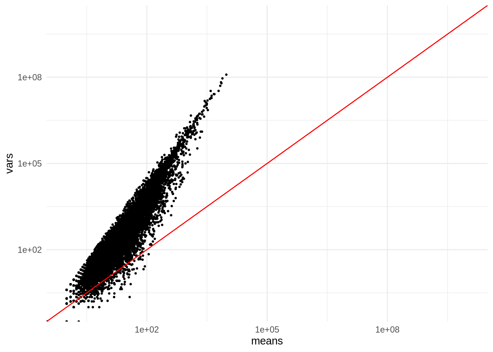
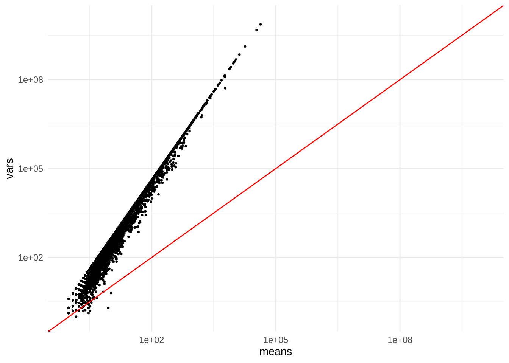
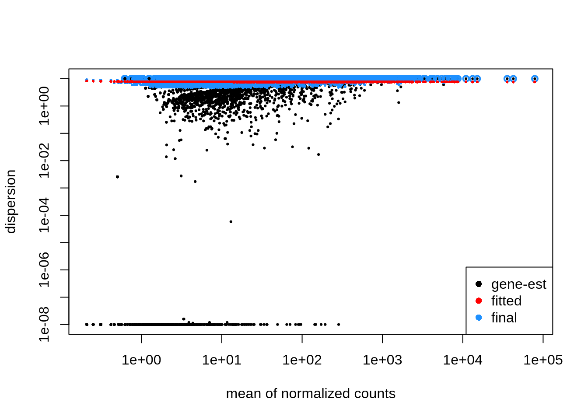
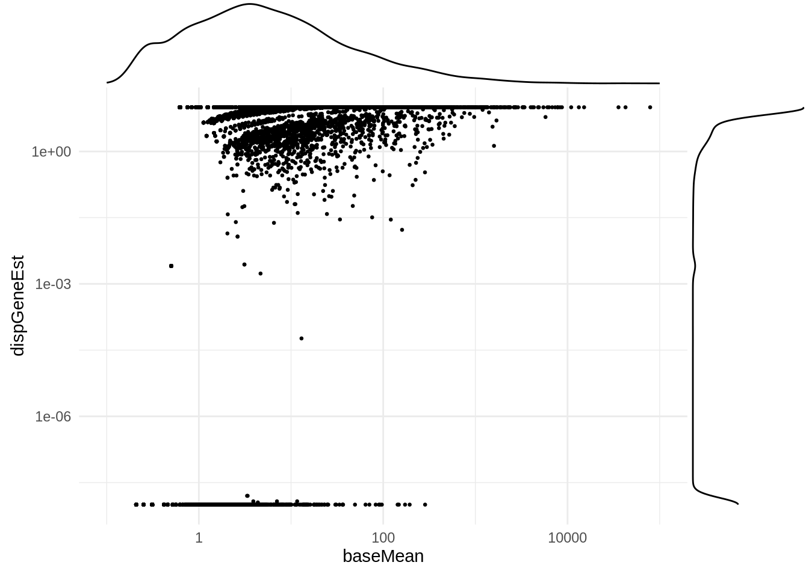
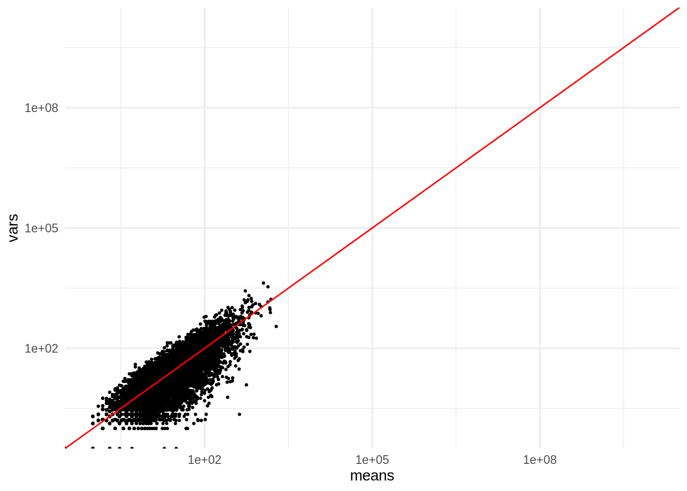
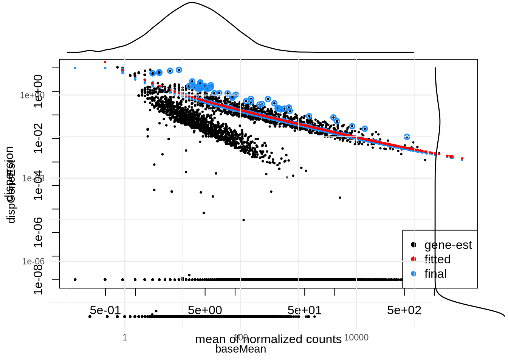
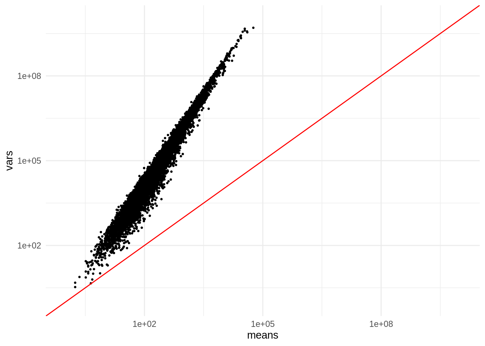
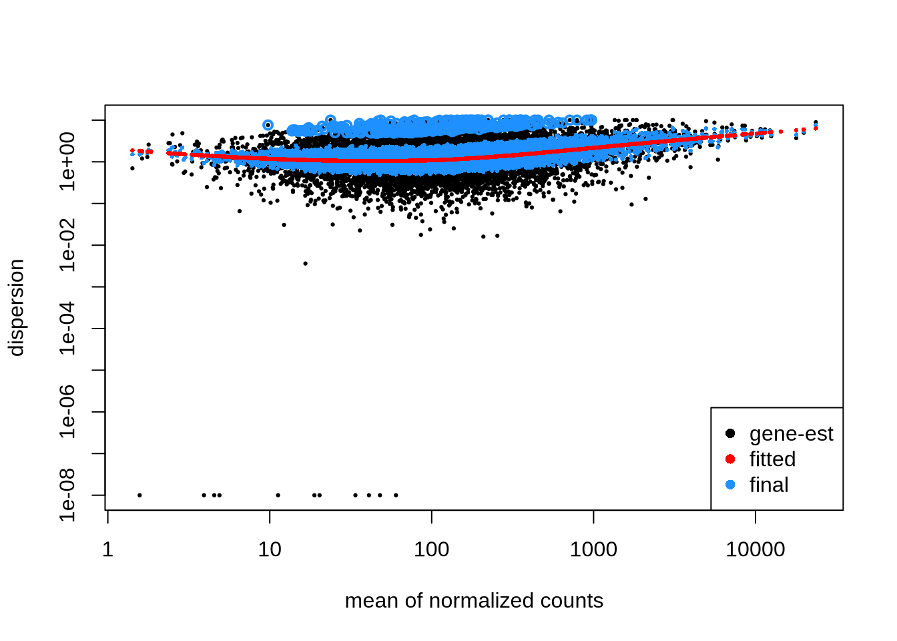
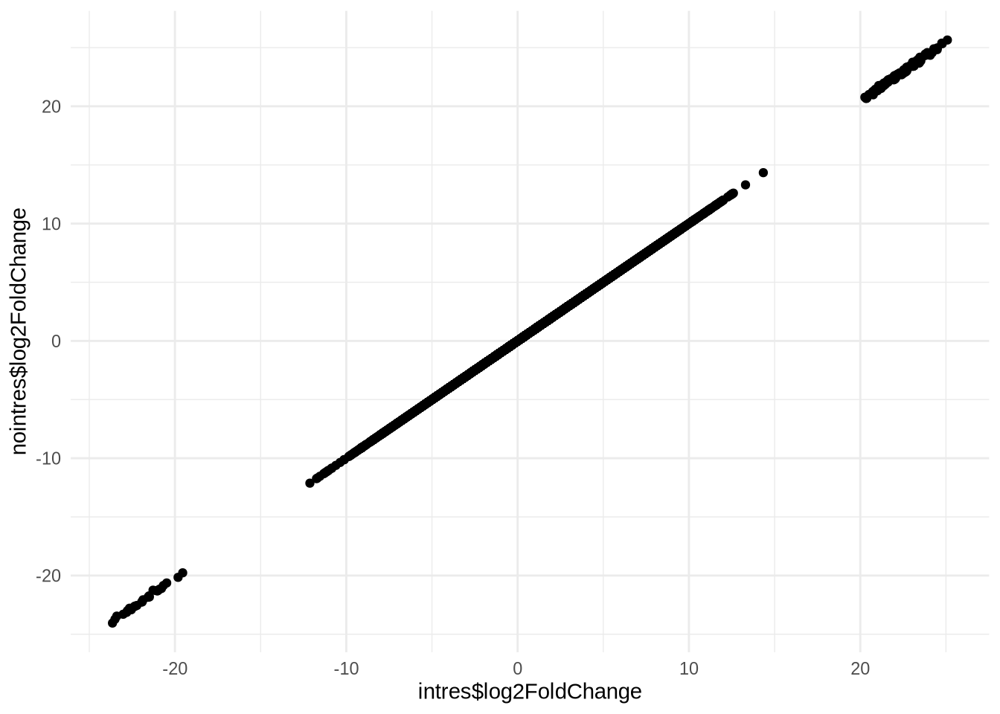
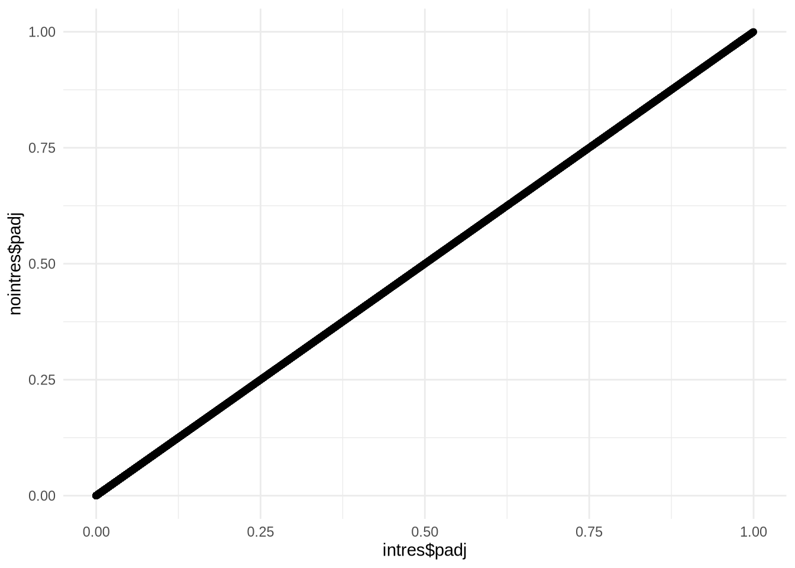

Additions
Bioinfo-Core @ MPI-IE
Fri May 3 15:29:58 2024
library("DESeq2")
library("ggplot2")
library("tidyverse")
library("ggExtra")Example on disbalanced issues with colMeans trick
Let’s have five WT samples:
2 WT = DMSO treated
3 WT = DRUG treated
and four KO samples:
2 KO = DMSO treated
2 KO = DRUG treated
and let’s try to investigate the DRUG effect OVER the genotypes.
coldata <- data.frame(
cond = c("DMSO", "DMSO", "DRUG", "DRUG", "DRUG", "DMSO", "DMSO", "DRUG", "DRUG"),
genotype = c("WT", "WT", "WT", "WT", "WT", "KO", "KO", "KO", "KO")
)
modmat <- model.matrix(~cond * genotype, coldata)
a <- modmat[coldata$cond == "DMSO", , drop = FALSE]
b <- modmat[coldata$cond == "DRUG", , drop = FALSE]
colMeans(b) - colMeans(a)## (Intercept) condDRUG genotypeWT condDRUG:genotypeWT
## 0.0 1.0 0.1 0.6And compare this to what we get when we have BALANCED sampling:
coldata <- data.frame(
cond = c("DMSO", "DMSO", "DRUG", "DRUG", "DMSO", "DMSO", "DRUG", "DRUG"),
genotype = c("WT", "WT", "WT", "WT", "KO", "KO", "KO", "KO")
)
modmat <- model.matrix(~ cond * genotype, coldata)
a <- modmat[coldata$cond == "DMSO", , drop = FALSE]
b <- modmat[coldata$cond == "DRUG", , drop = FALSE]
colMeans(b) - colMeans(a)## (Intercept) condDRUG genotypeWT condDRUG:genotypeWT
## 0.0 1.0 0.0 0.5Dispersion examples
data <- readr::read_tsv("data/myeloma/myeloma_counts.tsv")
data <- data %>%
column_to_rownames(var="gene_id") %>%
mutate(across(where(is.double), as.integer))Behavior of a true dataset
means <- data %>% select("BM_TG_1", "BM_TG_2", "BM_TG_3") %>% filter_all(any_vars(. != 0)) %>% apply(1, mean)
vars <- data %>% select("BM_TG_1", "BM_TG_2", "BM_TG_3") %>% filter_all(any_vars(. != 0)) %>% apply(1, var)
ggplot(data.frame(means,vars)) +
geom_point(size=0.5, aes(x=means, y=vars)) +
scale_y_log10(limits=c(1,1e10)) +
scale_x_log10(limits=c(1,1e10)) +
geom_abline(intercept = 0, slope = 1, color="red") +
theme_minimal()
Dispersion example when ‘expected’ distribution is followed
dds_normal <- makeExampleDESeqDataSet(
n = 10000,
m = 4,
betaSD = 2,
interceptMean = 4,
interceptSD = 2
)
means <- counts(dds_normal) %>% apply(1, mean)
vars <- counts(dds_normal) %>% apply(1, var)
ggplot(data.frame(means,vars)) +
geom_point(size=0.5, aes(x=means, y=vars)) +
scale_y_log10(limits=c(1,1e10)) +
scale_x_log10(limits=c(1,1e10)) +
geom_abline(intercept = 0, slope = 1, color="red") +
theme_minimal()
dds_normal <- DESeq(dds_normal)
plotDispEsts(dds_normal)
p <- ggplot(data=mcols(dds_normal)) +
geom_point(size=0.5, aes(x=baseMean, y=dispGeneEst)) +
scale_y_log10() +
scale_x_log10(limits=c(0.1,1e5)) +
theme_minimal()
ggMarginal(p) ### Dispersion estimation when variance is very high
### Dispersion estimation when variance is very high
dds_overdisp <- makeExampleDESeqDataSet(
n = 10000,
m = 4,
betaSD = 2,
interceptMean = 4,
interceptSD = 2,
dispMeanRel = function(x) x
)
means <- counts(dds_overdisp) %>% apply(1, mean)
vars <- counts(dds_overdisp) %>% apply(1, var)
ggplot(data.frame(means,vars)) +
geom_point(size=0.5, aes(x=means, y=vars)) +
scale_y_log10(limits=c(1,1e10)) +
scale_x_log10(limits=c(1,1e10)) +
geom_abline(intercept = 0, slope = 1, color="red") +
theme_minimal()
dds_overdisp <- DESeq(dds_overdisp)## estimating size factors## estimating dispersions## gene-wise dispersion estimates## mean-dispersion relationship## final dispersion estimates## fitting model and testingplotDispEsts(dds_overdisp)
p <- ggplot(data=mcols(dds_overdisp)) +
geom_point(size=0.5, aes(x=baseMean, y=dispGeneEst)) +
scale_y_log10() +
scale_x_log10(limits=c(0.1,1e5)) +
theme_minimal()
ggMarginal(p)
dds_poisson <- makeExampleDESeqDataSet(
n = 10000,
m = 4,
betaSD = 0,
interceptMean = 4,
interceptSD = 2,
dispMeanRel = function(x) 0
)
means <- counts(dds_poisson) %>% apply(1, mean)
vars <- counts(dds_poisson) %>% apply(1, var)
ggplot(data.frame(means,vars)) +
geom_point(size=0.5, aes(x=means, y=vars)) +
scale_y_log10(limits=c(1,1e10)) +
scale_x_log10(limits=c(1,1e10)) +
geom_abline(intercept = 0, slope = 1, color="red") +
theme_minimal()
dds_poisson <- DESeq(dds_poisson)## estimating size factors## estimating dispersions## gene-wise dispersion estimates## mean-dispersion relationship## -- note: fitType='parametric', but the dispersion trend was not well captured by the
## function: y = a/x + b, and a local regression fit was automatically substituted.
## specify fitType='local' or 'mean' to avoid this message next time.## final dispersion estimates## fitting model and testingplotDispEsts(dds_poisson)
p <- ggplot(data=mcols(dds_poisson)) +
geom_point(size=0.5, aes(x=baseMean, y=dispGeneEst)) +
scale_y_log10() +
scale_x_log10(limits=c(0.1,1e5)) +
theme_minimal()
ggMarginal(p)
dds_normal2 <- makeExampleDESeqDataSet(
n = 10000,
m = 4,
betaSD = 2,
interceptMean = 8,
interceptSD = 2
)
mixdf <- cbind(
counts(dds_normal),
counts(dds_normal2)
)
colnames(mixdf) <- c('wt_1', 'ko_1','wt_2', 'ko_2', 'wt_3', 'ko_3', 'wt_4' ,'ko_4')
metadf <- data.frame(
c('wt','ko','wt','ko', 'wt','ko','wt','ko')
)
colnames(metadf) <- 'genotype'
rownames(metadf) <- c('wt_1', 'ko_1','wt_2', 'ko_2', 'wt_3', 'ko_3', 'wt_4' ,'ko_4')
metadf$genotype <- factor(metadf$genotype)
dds <- DESeqDataSetFromMatrix(mixdf, colData=metadf, design=~genotype)
means <- counts(dds) %>% apply(1, mean)
vars <- counts(dds) %>% apply(1, var)
ggplot(data.frame(means,vars)) +
geom_point(size=0.5, aes(x=means, y=vars)) +
scale_y_log10(limits=c(1,1e10)) +
scale_x_log10(limits=c(1,1e10)) +
geom_abline(intercept = 0, slope = 1, color="red") +
theme_minimal()
dds <- DESeq(dds)
plotDispEsts(dds)
explode_var <- function(x){
y = list()
for (i in x){
if (i > 10 & i < 1000){
y <- c(y, 15)
}
else{
y <- c(y, 4/i+0.1)
}
}
return(unlist(y))
}
blowup_var <- function(x){
y = list()
for (i in x){
if (i >= 50 & i <= 200){
y <- c(y, 15)
}
else {
y <- c(y, 0)
}
}
return(unlist(y))
}INTERCEPTION
# Get the data directory
dfile <- "data/myeloma/myeloma_counts.tsv"
data <- read_tsv(file=dfile)
data <- data %>%
column_to_rownames("gene_id") %>%
mutate(across(where(is.double), as.integer))
# Read samplesheet , detects conditions, generate the formula
mfile <- "data/myeloma/myeloma_meta.tsv"
metadata <- read_tsv(file=mfile)
metadata <- metadata %>% column_to_rownames("sample")
metadata$condition <- as.factor(metadata$condition)
metadata$celltype <- as.factor(metadata$celltype)
# sanity check
all(rownames(metadata) == colnames(data))## [1] TRUEdds <- DESeqDataSetFromMatrix(
countData=data,
colData=metadata,
design= ~celltype + condition + celltype:condition
)
dds <- DESeq(dds)## estimating size factors## estimating dispersions## gene-wise dispersion estimates## mean-dispersion relationship## final dispersion estimates## fitting model and testingresultsNames(dds)## [1] "Intercept" "celltype_JJ_vs_BM"
## [3] "condition_DMSO_vs_AMIL" "condition_TG_vs_AMIL"
## [5] "celltypeJJ.conditionDMSO" "celltypeJJ.conditionTG"dds_noint <- DESeqDataSetFromMatrix(
countData=data,
colData=metadata,
design= ~0 + celltype + condition + celltype:condition
)
dds_noint <- DESeq(dds_noint)## estimating size factors## estimating dispersions## gene-wise dispersion estimates## mean-dispersion relationship## final dispersion estimates## fitting model and testingresultsNames(dds_noint)## [1] "celltypeBM" "celltypeJJ"
## [3] "conditionDMSO" "conditionTG"
## [5] "celltypeJJ.conditionDMSO" "celltypeJJ.conditionTG"intres <- results(dds, contrast=c(0,1,0,0,0,0)) %>% data.frame() %>% drop_na()
nointres <- results(dds_noint, contrast=c(-1, 1, 0,0,0,0)) %>% data.frame() %>% drop_na()
ggplot() +
geom_point(aes(
x=intres$log2FoldChange,
y=nointres$log2FoldChange
)
) + theme_minimal()
ggplot() +
geom_point(aes(
x=intres$padj,
y=nointres$padj
)
) + theme_minimal()